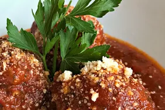

Homepage
Italian Meatballs

Description
This Italian meatball recipe is very easy to make, and since we skip the messy step of pan-frying the meatballs, it becomes downright simple. Here I use a standard half-beef/half-pork mixture. Once the meatballs are baked, add them to your favorite prepared tomato sauce
and simmer for 1 to 2 hours.
Italian Meatball Ingredients
Bread crumbs: Use store-bought bread crumbs or make your own at home.
Milk: Milk adds moisture, ensuring the meatballs don’t dry out during the cooking process.
Onion: An onion lends bold flavor.
Meat: You’ll need a pound of ground beef and a pound of ground pork.
Egg: An egg adds moisture and helps bind the meatballs together.
Cheese: For the most delicious results, grate your own Parmesan cheese.
Seasonings: The meatballs are seasoned with fresh parsley, garlic, salt, black pepper, dried Italian herb seasoning, and red pepper flakes.